Software engineer · Munich
I build driving‑simulation software at Vector.
Five years on DYNA4, the simulator carmakers use to test cars on virtual roads, and now on its new 3D road editor, VSceneCreator. Alongside, I’m studying for an M.Sc. in Informatics at TUM, focused on robotics and machine learning.
- Vector InformatikWorking student, 5+ years
- M.Sc. Informatics, TUMGraduating 2028
- Up to 18 h/weekAvailable in Munich
Experience01–02
01Vector InformatikUnity, C# · Nov 2024 – now
VSceneCreator
A 3D editor for building the roads and junctions that driving simulations run on.
- 70%faster into edit mode, at best
- 10%faster file loading
- 4alpha versions shipped
- The faster switch comes from loading only the objects that are visible or actually needed.
- Designed Explore Mode, a read-only way to look around a road scene. It now serves as a preview for licensed users and a friendlier first experience for free users.
- Shipped alpha versions 0.1–0.4 together with Product Management. They brought faster file loading and a progress bar instead of a frozen screen.
02Vector InformatikJava, Eclipse RCP · Mar 2021 – Oct 2024
DYNA4
A simulator carmakers use to test driving functions on a virtual road before testing on a real one.
- Worked on 5 major releases (5.0–9.0): new features, fixes for critical bugs and a better interface.
- Designed a way for engineers to give measurement signals readable names, with its own file format, saving and loading, and automatic checks that offer one-click fixes.
- Built tools that find files no longer used anywhere in a project and list every unsaved change in one place, and reworked the view engineers use to inspect recorded signals.

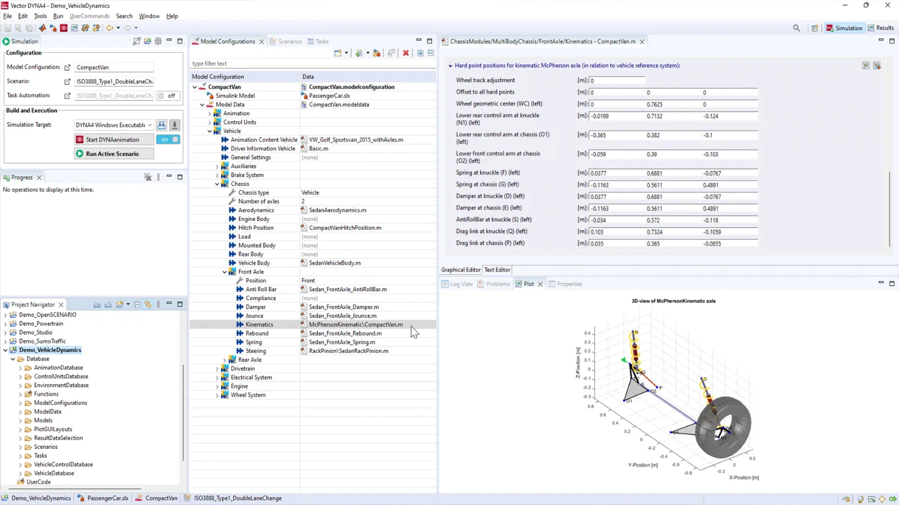
Projects03–07
03Legal Loves Tech HackathonReact, Supabase · Aug 2026
LoveNeverDies
An app that guides grieving families through the paperwork and deadlines after a death, built in ten days with a team of lawyers for a Bavarian Ministry of Justice challenge. Everything is encrypted on the family’s own devices, so not even the server can read it.
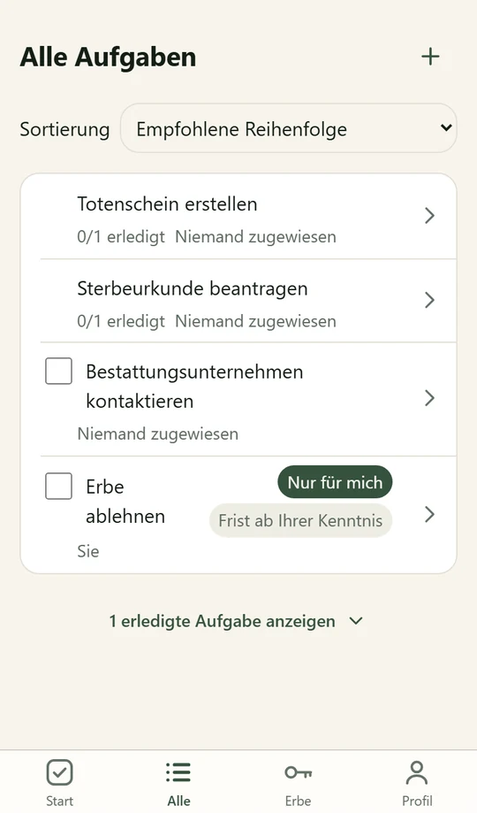
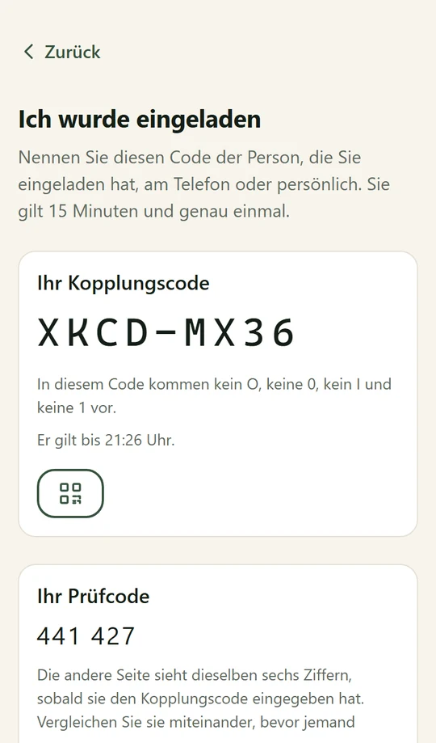
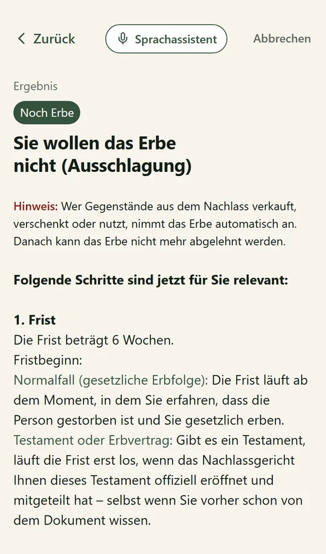
04Side projectReact, WebRTC · 2026
SchafPlay
Schafkopf, the Bavarian card game, to play solo or with a friend on the same Wi‑Fi. No accounts and no server: two devices connect directly through a QR code or link, and computer players fill the other seats. Each device only ever receives its own cards.
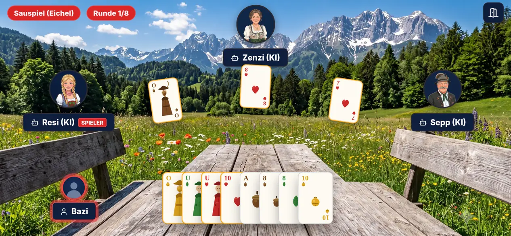
05Bachelor thesis, TUMPython, PyTorch · 2024
How robot arms learn to reach
To grab something, a robot arm has to work out how to bend each joint. I compared neural networks that learn this. The simplest one won: it solved all 10,000 test cases, in about 0.16 milliseconds each.
A year earlier, with the same advisor and supervisor, I wrote a seminar paper on the classic step-by-step methods that let an arm reach a target without hitting obstacles around it (PDF).
06Side projectTypeScript, iPhone web app · 2026
FitFinder
Your whole wardrobe on your phone: photograph each piece once, sort it, put outfits together and pick today’s in seconds. Works offline.
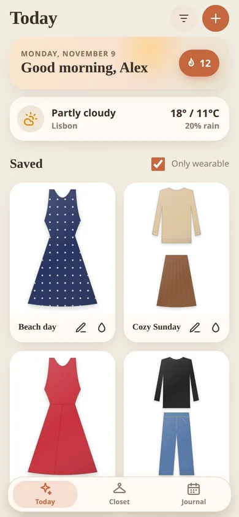
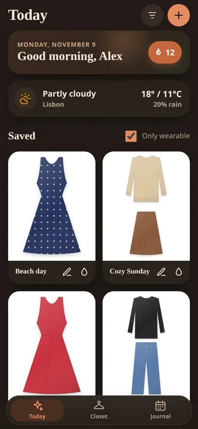
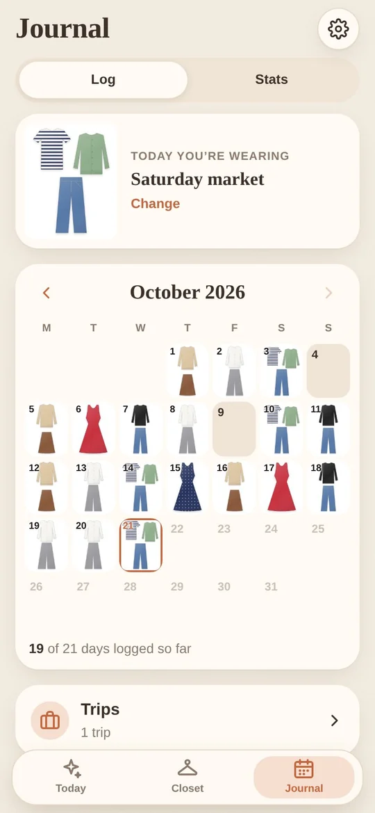
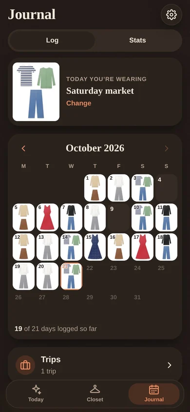
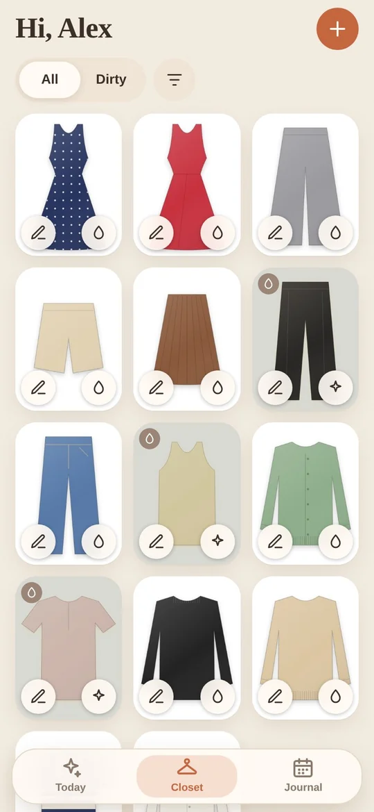
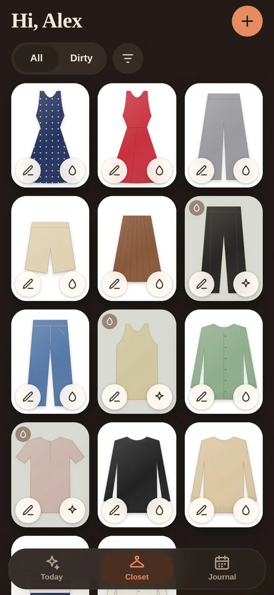
07Robotics seminar, TUMApr 2026 – Jul 2026
6D object pose estimation
How can a robot tell exactly where an object is and how it is turned, just from a camera image? I surveyed the methods, from classic geometry to the newest AI models that recognise objects they have never seen.
My conclusion: the most practical systems combine both. A large model finds the object once, then a fast tracker follows it frame by frame.
About08–09
08Technical University of Munich
Education
- M.Sc. InformaticsOct 2026 – 2028 (expected)Focus on robotics and machine learning.
- B.Sc. Computer Science, application area Physics2020 – 2026Completed alongside part-time work at Vector. Thesis: how robot arms learn to reach (learning-based inverse kinematics).
- Languages
- C#, Java, TypeScript, JavaScript, Python, C/C++, SQL
- Frameworks
- Unity, React, React Native, PyTorch, Eclipse RCP, Supabase / Postgres, WebRTC
- Tooling
- GitHub Actions, Jenkins, Linux
09Ironman triathlonOutside work
Ironman finisher in 14:21:26
Finish time over 3.8 km swim, 180 km bike, 42.2 km run
When I’m not training or coding, I play trombone and piano.
Contact
medina.emanuel@proton.me
I’m in Munich and available for up to 18 hours a week alongside my master’s.